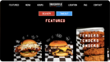

Summary
Hey, I’m Zaki. Product Design Lead with 6+ years creative experience in product delivery and team leadership. I love solving tough customer problems through discovery, modern design solutions and clear communication with all parts of the business.
I am passionate about developing designers skillsets and helping them be as creative as possible while setting clear guidelines and progressions to build awesome products.
I am skilled in user-centered design, ux research, product design and design thinking workshops. I began my career as a front-end developer and continue to rely on those skills when communicating with cross-functional teams which allows me a more clear perspective on timelines and feasibility.
Work Experience
UX Manager at Optym
Dallas, TX (Hybrid) | August 2022 — March 2023
Company Description:
Mid-sized trucking business for B2B SaaS products bringing efficiency to trucking through optimization & AI.
Responsibilities + Accomplishments
• Led a team of 5 designers, overseeing their daily workflow and driving the creation of high-quality design deliverables in an agile environment while also continuing to design impactful experiences to enhance user satisfaction.
• Established best practices and processes for ux research, interviewing, design QA, and design reviews to ensure consistency and quality across all B2B SaaS products.
• Facilitated cross-functional white-boarding sessions and workshops to define key product decisions and establish internal processes.
• Managed the front-end team’s workflows, ensuring accurate execution of features according to prioritization.
• Led the discovery and product design of Load AI, an artificial intelligence product for automated load and driver matching to optimize profitability.
UX/UI Design Mentor at Thinkful (Chegg)
Remote | December 2022 — February 2023
Company Description:
UX/UI Design bootcamp to guide students into beginning their design career.
Responsibilities + Accomplishments
• Provided guidance, counseling, and support to students enrolled in the Thinkful (Chegg) UX/UI Design Bootcamp.
Lead UX Designer at Avanade (Microsoft + Accenture JV)
Houston, TX (Hybrid) | October 2017 - May 2022
Company Description:
Large enterprise technology consulting firm, a joint venture between Microsoft + Accenture
Responsibilities + Accomplishments
• Designed experiences and led teams in ux research, user-centered design, interaction design, wire-framing, prototyping and usability testing over 17 projects for a wide variety of mobile and desktop applications across multiple industries (trucking, healthcare, management consulting, retail, beveraging and energy).
• Worked closely with cross-functional teams to ensure that the user's needs were at the forefront of our designs, while also ensuring that our solutions were aligned with our clients' budgets and business timelines. I also assisted the front end team with front end features using HTML, CSS and JavaScript.
• Served as a career advisor to three junior designers, providing regular feedback on their work, mentoring them on client management, and facilitating their career growth with bi-weekly check-ins.
• Used Design Thinking techniques to facilitate workshops with c-suite executives and key stakeholders for 5 enterprise projects.
• Designed and helped develop a lightweight app in 24 hours in response to COVID-19 for a large cancer center.
• Hosted quarterly regional townhalls in association with C-suite executives for the South Region.
Full Stack Software Developer at W Energy Software
Tulsa, OK | February 2017 — July 2017
Company Description:
Mid-sized company offering a B2B SaaS product specializing in accounting software tailored specifically to the oil + gas industry.
Responsibilities + Accomplishments
• Developed, maintained, and upgraded accounting management software that was tailored specifically for the oil and gas industry. Working in an agile environment, I utilized a variety of technologies, including Ruby on Rails, Go Language, CoffeeScript, SQL, BackBone.Js, HTML5, and CSS3 to create software solutions that met the specificity of accounting practices.
UX Designer, Full Stack Web Developer at Sterling Engineering
Houston, TX | July 2016 — December 2016
Company Description:
Small civil engineering firm beginning to engage in software development in the e-commerce and job bidding space.
Responsibilities + Accomplishments
• Specialized in designing, developing and maintaining construction software, specifically in the e-commerce and construction bidding process space. I utilized a variety of technologies including Ruby on Rails, React, HTML5/CSS3 and Sketch to build and maintain software solutions that met the unique needs of the construction industry.
Tools
Figma, Adobde XD, Sketch, Mural, Miro, Adobe Illustrator, HTML5, CSS3, JavaScript, Git/Github
Skills
Wire-framing, Prototyping, User Flows, Journey Maps, Design Systems, User Flows, Accessibility (WCAG 2.1), Design Thinking, Heuristic Evaluation
Licenses & Certifications
Education
Full Stack Web Development at Iron Yard Bootcamp
Houston, TX | April 2016
Petroleum Engineering at the University of Houston
Houston, TX | December 2014
Side Projects
Design and Development for Smashville Hot Chicken + Burgers
Remote | April 2023 — June 2023
Company Description:
Multi-million dollar hot chicken and burger restaurant based out of the New Jersey area
Responsibilities + Accomplishments
Using the restaurants existing design and aesthetic of graffiti and neon lights I designed and developed a creative experience that pairs the in brick and mortar restaurants aesthetic with the digital one including signage, event banners and website.
